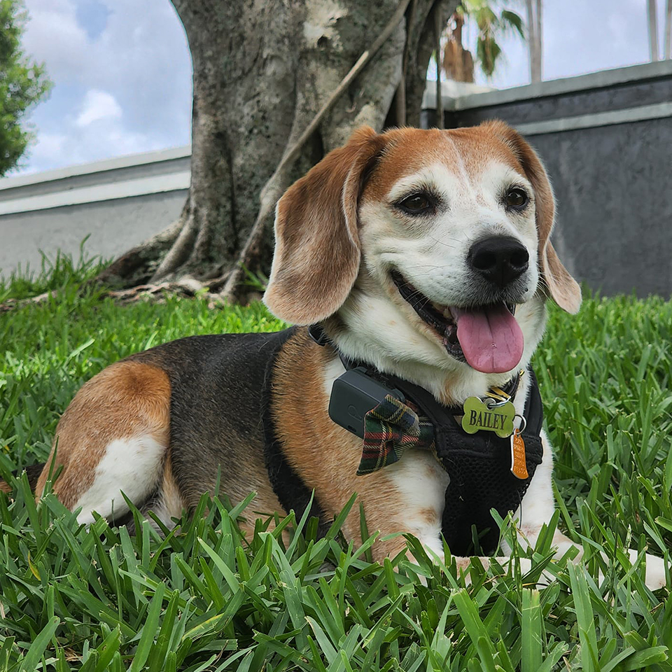

I've been a Graphic Designer for over a decade. I started designing digitally in 1997 with software called The Print Shop, a precursor to Photoshop. This program sparked my love for design.
He's pretty much my whole life. He's also my co-worker as he sits next to me as I work remotely every day from the comfort of our bed. He's very sweet, and her loves wearing bowties.
I wanted to share some of the highlights of myself without getting too bogged down in the details. Here's a fun way to get to know each other!
I am a Visual Information Specialist at CDC. I have been working there over 2 years now doing art direction, illustration, and graphic design. I currently reside on the campaigns team where I act a project manager and lead designer to execute complex campaigns for both the USA and other countries abroad. I've worked on dengue campaigns, the COVID-19 campaign, and so many others. This job is so rewarding, and I love seeing my work in the real world. I've been a professional designer for 11 years now, and this is my favorite job yet.
I adopted Bailey at 8 weeks old in October of 2014. My little one is about to turn 8 years old this August, and I can't believe where the time has gone. Most of my spare time has been devoted to caring for my little guy. He sucessfully completed his Puppy, Beginner, and Intermediate training classes at Petsmart and graduated back in 2015. He is my heart and soul beagle, my everything beagle. I often find myself doodling him in my downtime.
After getting the H1N1 vaccine at 17 years old, the virus triggered one of my genes, and my cells effectively destroyed all the orexin/hypocretin in my brain. From this point in 2009 until my diagnosis in 2021, I went without deep sleep for 12 years. They say Narcolepsy is best described as if you were to stay awake for 3 days straight. It is a depressing and debilitating disease, but February last year, I started medication to simulate deep sleep. I woke up the next day having felt rested for the first time in 12 years.